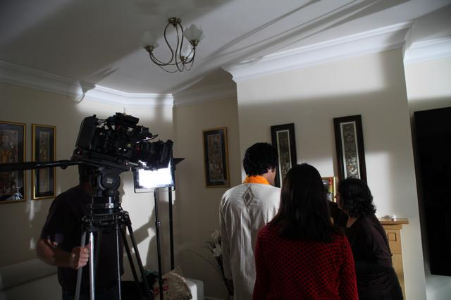
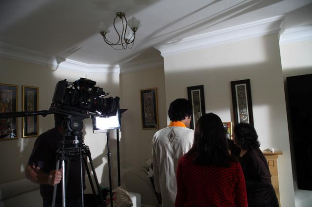

"The Offering" is a new 10-minute short by Sima Gonsai, working in collaboration with Chitraleka Dance Company and producer Julia Higginbottom. The project has been developed through iShorts National Screen Development programme, funded by Creative England as part of the BFI NET.WORK.
This semi autobiographical piece explores a unique style of storytelling, combining Bharata Natyam dance, choreography and Indian Classical music. The synopsis explores the symbolisms of Hindu reincarnation, and follows the journey of an aspiring young dancer as she finds enlightenment through dance.
The film will be submitted to film festivals nationally and internationally.
A dance film by Sima Gonsai and Julia Higginbottom

 
